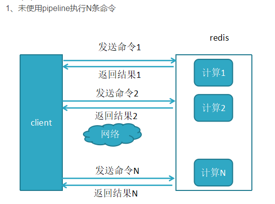
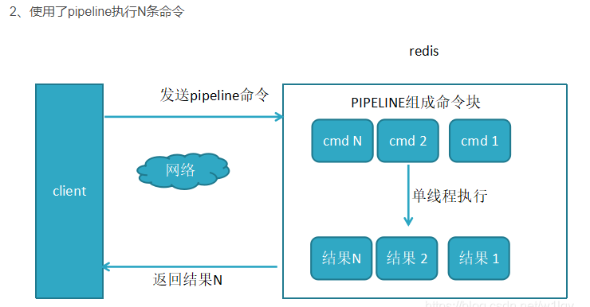

类型
1.字符串(set\get)
使用场景： 计数(库存, 统计)
2.哈希(hset\hget)
使用场景： 存储对象
3.列表(lpush\lpop)
使用场景： 消息队列，分页，完成任务合集
4.集合(sadd\spop) 集合成员是唯一
使用场景： 标签，共同属性集合
5.有序集合(zadd\zscore) 集合成员是唯一
使用场景： 定时马甲，延时处理订单
特殊类型
1.HyperLogLogs(基数统计)
2.Bitmap(位存储)
3.geospatial(地理位置)
缓存更新策略
策略一
1.LRU 淘汰最久没有被访问过的
2.LFU 淘汰访问次数最少的
3.FIFO 先进先出
只能选一种，属于当缓存不够用时采用的更新算法
策略二
超时剔除，给缓存数据手动设置一个过期时间
策略三
如果数据源的数据有更新，则主动更新缓存
回收策略（淘汰策略）
1. volatile-lru
从已设置过期时间的数据集（server.db[i].expires）中挑选 最近最少使用的数据淘汰
2. volatile-ttl
从已设置过期时间的数据集（server.db[i].expires）中挑选 将要过期的数据淘汰
3. volatile-random
从已设置过期时间的数据集（server.db[i].expires）中任 意选择数据淘汰
4. allkeys-lru
从数据集（server.db[i].dict）中挑选最近最少使用的数据淘 汰
5. allkeys-random
从数据集（server.db[i].dict）中任意选择数据淘汰
6. no-enviction
禁止驱逐数据
Pipeline
 可以将多次 IO 往返的时间缩减为一次，前提是 pipeline 执行的指令之 间没 有因果相关性。使用 Redis-benchmark 进行压测的时候可以发现影响 Redis 的 QPS 峰值的一个重要因素是 pipeline 批次指令的数目。
缓存穿透和缓存击穿的区别
缓存穿透
不断请求缓存和数据库中没有的数据，导致数据库压力过大，即绕过缓存，穿透到数据库
解决方案:
1.接口层校验数据，拦截非法请求
2.从缓存取不到数据，并且数据库也没有，将key-value对写为key-null，缓存有效时间可以设置短一些，太长防止更新了该数据造成找不到的情况
3.布隆过滤器(高效地插入和查询的数据结构),可以用来告诉你 “某样东西一定不存在或者可能存在”
缓存击穿
在一个Key失效的瞬间，持续的大并发就穿破缓存，直接访问数据库
解决方案:
1.设置key永不过期
2.添加互斥锁，但收到一个请求时，其他请求需要等待，一个个轮流查询，避免数据库压力过大
缓存雪崩
大量key在同一时间过期
解决方案:
1.设置key永不过期
2.过期时间设为随机
主节点选举
每一个Sentinel节点都可以成为Leader
1. 当一个Sentinel节点确认redis集群的主节点主观下线后，会请求其他Sentinel节点要求将自己选举为Leader
2. 被请求的Sentinel节点如果没有同意过其他Sentinel节点的选举请求，则同意该请求(选举票数+1)，否则不同意
3. 如果一个Sentinel节点获得的选举票数达到Leader最低票数(quorum和Sentinel节点数/2+1的最大值)，则该Sentinel节点选举为Leader；否则重新进行选举
mark
假如 Redis 里面有 1 亿个 key，其中有 10w 个 key 是以某 个固定的已知的前缀开头的，如果将它们全部找出来？
使用 keys 指令可以扫出指定模式的 key 列表。 对方接着追问：如果这个 Redis 正在给线上的业务提供服务，那使用 keys 指 令会有什么问题？ 这个时候你要回答 Redis 关键的一个特性：Redis 的单线程的。keys 指令会 导致线程阻塞一段时间，线上服务会停顿，直到指令执行完毕，服务才能恢 复。这个时候可以使用 scan 指令，scan 指令可以无阻塞的提取出指定模式的 key 列表，但是会有一定的重复概率，在客户端做一次去重就可以了，但是整 体所花费的时间会比直接用 keys 指令长。